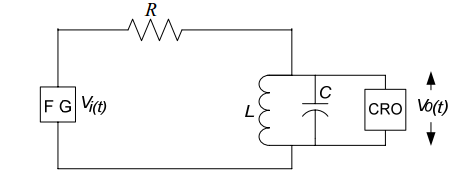

Pre Quiz
Test Your Knowledge!!

Theory
Objective: Experimental verification of Fourier Coefficients of a square wave Signal using passive network.
In this experiment a circuit(Fig 1) will be provided. A p-p sinusoidal signal of amplitude 3V will be applied to it and its frequency response would be verifed
to know which kind of filter circuit it is approaching to.

[Fig 1:Passive Circuit diagram]
After verifing frequency response a p-p square wave signal is applied to the circuit.Its frequency is adjusted to observe different harmonic components.
Here we observe only 1st , 3rd & 5th harmonics by adjusting frequencies ,volt/division knob and time/division knob in oscilloscope.The peak amplitude of the
output votage may be in milivolts,depending on the passive components.In simulation the values of Fundamental component, 1st,3rd,5th harmonic coefficients are found at the end.
We know that, a square wave is a combination of sine waves.generally,the equation of a square wave with amplitude 1V is :
Y(t)= 4/π(sinwt + sin3wt/3 + sin5wt/5 +……….).

Procedure
- Connect the circuit elements as mentioned below 1-3 ,3-4 ,5-6, 8-7, 7-9, 10-2(ex:-Drag from 1 and click on 3. Connections are shown in simulator tab)
- 3 volt p-p sinusoidal voltage is applied at the input.Put R=100KΩ ,L=10mH, C=100nF.
- Switch on the oscilloscope by clicking "ON" button & click twice the Sine wave button for input signal & click on the"Output" button to observe the output.Channel & Channel2 button shows the input & output signals respectively. Dual, shows both of them.
- Change the Frequency of input signal by the Frequency knob from 100Hz to 100KHz & observe the corresponding output voltage signal.
- Click on Tableshow button each time after clicking on "output" button to see observation eachtime.
- Click on Plot button to see the frequency response plot(Gain(dB)vs.Frequency(Hz)).Click on Clear button to clear datas.
- Switch off the oscilloscope.Then again switch on.
- click on 'square wave' button & keep the frequency around 15KHz.click 'square output' to see first harmonic component & click on 'Tableshow' to have the fundamental Fourier series coefficient value
- Repeat the above step for square wave input of frequencies around 5KHz & 3.5KHz to have values of 3rd & 5th harmonic Fourier series co-efficients respectively.
- Switch off the oscilloscope.
- For above three steps keep L & C values 10 mH-10nF, 1mh-100nF, 0.1mH-1000nF each time before changing the frequencies.Each time readings should be taken for three sets of values of L and C.

Operating Environment
Minimum System Requirement:
- A standard PC running Microsoft Windows XP, Windows Vista.
- 512MB RAM and 500 MB of available hard-disk space is recommended
- 1024x768 or higher screen resolution;
- a mouse or other pointing device
- A CD-ROM drive

Simulator
Pre-Requisite to run the Simulator:
Link to the simulator:
The simulator for this experiment is designed based on JavaScript platform combined with HTML5 Canvas for graphics. So the users are recommended to use browsers with HTML5 compatible.
Link to the simulator:
Click here to perform the Experiment
Quiz
Test Your Knowledge!!

Reference
A) Book Name:
1)Electronic Devices & Circuits by J.B Gupta
B) Video Lecture:Click here for NPTEL Video Lecture